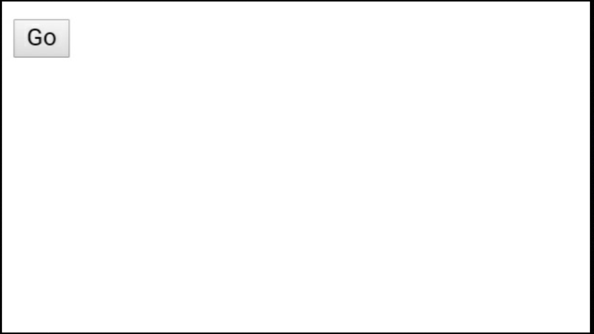

You will definitely want to put a button on your website through which visitors can go from one page to another. This is what you will find on this page. The code required for this is mentioned below.
CODE:
<a href="###"><button>Go</button></a>
DISCRIPTION
The tag you need to create a button is a button tag. Write what will be written on the button between the two ends of the tag. Class or ID can also be added for button tags. If no attribute is added then that button will be the default button. That means absolutely normal quality buttons. Adding some style and class to it can change its color and style, but most browsers do not support it. So in most cases the default button is used more on different websites. However, just by creating the button tag, the visitor will not be able to get from one page to another. For this, an a attribute has to be added. But the button tag must be inside the a tag. Don't forget to enter the name of the destination HTML file in the href attribute of the tag.
OUTPUT

বাংলায়
You will definitely want to put a button on your website through which visitors can go from one page to another. This is what you will find on this page. The code required for this is mentioned below.
কোড:
<a href="###"><button>Go</button></a>
ব্যাখ্যা
বাটন ক্রিয়েট করার জন্য যে ট্যাগ টি লাগবে তা হল বাটন ট্যাগ। বাটন টি তে কি লেখা থাকবে সেটা ট্যাগ টির দুই প্রান্তের মাঝখানে লিখতে । বাটন ট্যাগের ক্ষেত্রেও ক্লাস বা আইডি যোগ করা যেতে পারে। যদি কোন এট্টিবিউট যোগ না করা হয় তাহলে সে বাটনটি ডিফল্ট বাটন হবে। অর্থাৎ একেবারে সাধারণ মানের বাটন। এর সাথে কিছু স্টাইল এবং ক্লাস যোগ করার মাধ্যমে এটির রং এবং স্টাইল পাল্টানো গেলেও অধিকাংশ ব্রাউজার সেটি সাপোর্ট করে না। তাই বেশিরভাগ ক্ষেত্রেই ডিফল্ট বাটনটি বেশি ব্যবহার করা হয়ে থাকে বিভিন্ন ওয়েবসাইটে। তবে শুধু বাটন ট্যাগ টি ক্রিয়েট করার মাধ্যমেই ভিজিটর এক পেজ থেকে আরেক পেয়ে যেতে পারবেনা।এজন্য একটি a এট্রিবিউট যোগ করতে হবে। তবে বাটন ট্যাগ টিকে a ট্যাগ এর ভিতরে থাকতে হবে। a ট্যাগটির href এট্রিবিউটে গন্তব্য রত এইচটিএমএল ফাইল টির নাম লেখা ভুলনবেন না যেন।
আউটপুট: